Exemples de suites
I Suites arithmético-géométriques
On appelle suite arithmético-géométrique
une suite récurrente donnée
par un premier terme u0 et une relation de récurrence du type
un+1=aun+b. On va commencer par s'intéresser à quelques
cas particuliers...
II-Suites homographiques1.1 Suites géométriques
La suite (un) définie par un+1=aun et un premier terme u0 s'appelle suite géométrique de raison a. On peut facilement calculer (par récurrence) son terme général : un=anu0. La somme Sn=u0+...+un se calcule tout aussi aisément. Si a=1, on a Sn=nu0. Dans le cas contraire, on a : Sn=u0(1-an+1)/(1-a).
A partir du terme général, il est facile d'obtenir le comportement asymptotique de la suite :
La suite diverge vers plus ou moins l'infini suivant le signe du terme initial La suite stationne au premier terme La suite converge vers 0. La suite diverge, mais plus ou moins l'infini ne sont pas limite de la suite (en fait la suite admet deux valeurs d'adhérence, qui sont plus ou moins l'infini). Voici une interprétation géométrique de ces résultats :
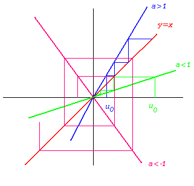 Pour a>1, on observe un escalier qui va à l'infini.
Pour |a|<1, on a un escalier convergeant vers 0 (0 est un point fixe attractif)
Pour a<-1, on a un colimaçon qui s'agrandit en tournant autour de 0 (0 est un point fixe répulsif)1.2. Suites arithmétiques
On repart de la récurrence générale : un+1=aun+b. On sait que si cette suite récurrente a une limite, ce ne peut être qu'un point fixe de f(x)=ax+b. Or l'équation x=ax+b n'a pas de solutions si a=1 et b non nul. On appelle donc suite arithmétique de raison b une suite donnée par la relation de récurrence : un+1=un+b. Le terme général et la somme des premiers termes se calculent toujours aussi facilement. Avec les mêmes notations, on a ainsi : un=u0+nb et 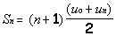.
Le comportement asymptotique est simple. On remarque facilement que si b>0, alors la suite diverge vers 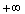, et que si b<0, alors la suite diverge vers . Graphiquement, la droite y=x+b est parallèle à la droite y=x, et on a ou bien un escalier montant, ou un escalier descendant.
1.3. Suites arithmético-géométriques
Désormais, on a b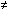0 et a1. L'équation l=al+b possède alors une unique solution, qui vaut : 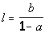. On se ramène au cas précédent en étudiant la suite vn=un-l. (vn) est alors une suite géométrique de raison a, et donc vn=anv0= an(u0-l) ce qui donne finalement un=an(u0-l)+l. Le calcul de la somme des premiers termes de la suite (vn) donne également facilement celui de (un). on trouve ainsi : 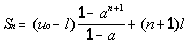.
L'étude du comportement asymptotique (dans le cas non trivial où le premier terme est différent de l) distingue diverses valeurs de a.
La suite diverge vers plus ou moins l'infini suivant la position du premier terme par rapport à l La suite converge vers l. La suite diverge, mais plus ou moins l'infini ne sont pas limite de la suite (en fait la suite admet deux valeurs d'adhérence, qui peuvent être plus ou moins l'infini). En voici l'interprétation géométrique :
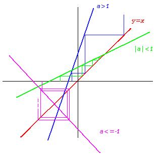
1.4. Quelques exemples...
Les suites arithmético-géométriques interviennent souvent dans des problèmes assez concrets, comme par exemple le calcul d'échéances de prêts, ou encore d'intérêts. En voici une moins classique... Un carré unité est divisé en 9 carrés égaux, le carré central est colorié. Les huit carrés restant sont à leur tour divisés et coloriés selon le même procédé. Si on continue ainsi indéfiniment, quelle est la limite de l'aire du domaine colorié???
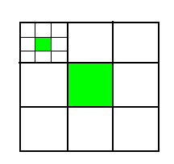
Si on désigne par An l'aire hachuré à la n-ième itération, alors on a A1=1/9, et la relation de récurrence An+1=An+(1-An)/9=8An/9+1/9 (on colorie toujours 1/9 de ce qui reste). on a donc convergence, et le point fixe vérifie l=8l/9+1/9, ce qui prouve que la suite converge vers 1.
on appelle suite homographique une suite donnée par une relation de récurrence du type : 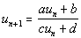, avec les conditions supplémentaires c0 et ad-bc0. Ces suites peuvent ne pas être définies partout, en fonction de la valeur du terme initial. Les points fixes éventuels (ou encore les limites possibles de la suite) vérifient l'équation du second degré : cl2+(d-a)l-b=0. On distingue donc différents cas suivant le signe du discriminant :
- Si on a deux points fixes, notons les et . on vérifie alors que la suite (vn) définie par 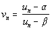est géométrique de raison 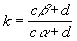. Donc si |k|<1, (vn) converge vers 0, et (un) converge vers . Si |k|>1, (|vn|) tend vers l'infini, et (un) converge vers . Si k=-1, la suite diverge (elle prend alternativement deux valeurs...)
- Si on a un unique point fixe l, alors la suite définie par 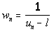 est arithmétique de raison 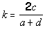, ce qui prouve que la suite initiale converge vers l.
- Si on n'a pas de points fixes, alors la suite diverge.
Voici une interprétation géométrique du premier cas (a=2,b=1,c=3,d=5). on remarque très clairement la nature très différente des points fixes. On peut partir très près de et pourtant on sen éloigne irréversiblement...
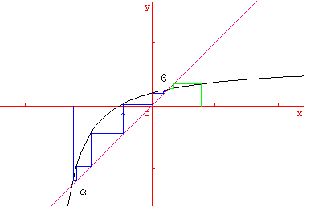